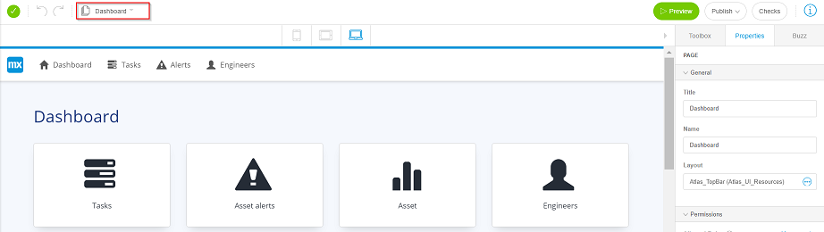
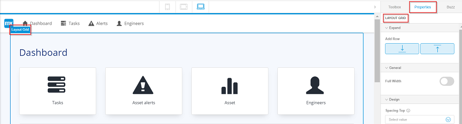
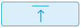
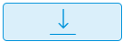

To add a row to the dashboard of your app, follow these steps:
-
Open the Dashboard page of your app.

-
Select the layout of the dashboard.
- The Properties tab is selected in the top right
corner of the Studio.
- Properties of the LAYOUT GRID is available.

-
In the Expand menu, click:
- : to add a row at the
top of the layout grid.
- : to add a row at the
bottom of the layout grid.